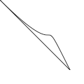

curveto
curveto(h1x, h1y, h2x, h2y, x, y)
The curveto() command must be called between beginpath() and endpath(). Draws a curve between the current point in the path and a new destination point. The last two parameters, x and y, set the location of the new destination point. The first and second, and the third and fourth parameters set the location of the two control points of the curve. These control points, or handles, define the edge and slant of the curve.
 |
beginpath(0,0)
curveto(100,100,50,0,100,100)
endpath() |